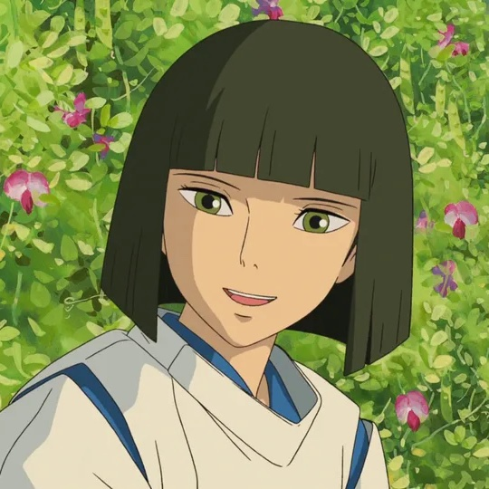
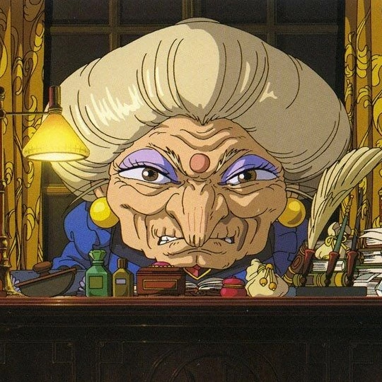

Casting
-

Rumi Hiiragi
Chihiro -

Miyu Irino
Haku -

Mari Natsuki
Yubaba/Zeniba
Bande-annonce
Mon Avis
Le Voyage de Chihiro est sans doute mon film préféré de Miyazaki, celui qui m'a le plus marqué dans mon enfance. À chaque visionnage, il me transporte dans un univers onirique où l'émerveillement côtoie la peur, la beauté se mêle à l'étrange. C'est un film qui ne se contente pas de raconter une histoire, mais qui invite à la réflexion, qui laisse une empreinte durable par sa poésie et son atmosphère. Chaque scène, chaque personnage semble chargé d’une émotion profonde, et c’est cette richesse qui fait de ce film une œuvre intemporelle.